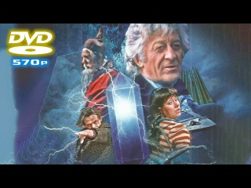
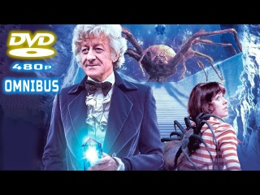
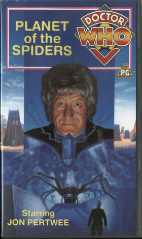
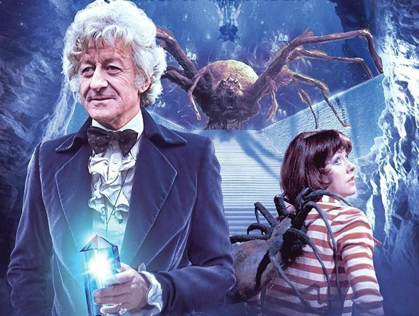
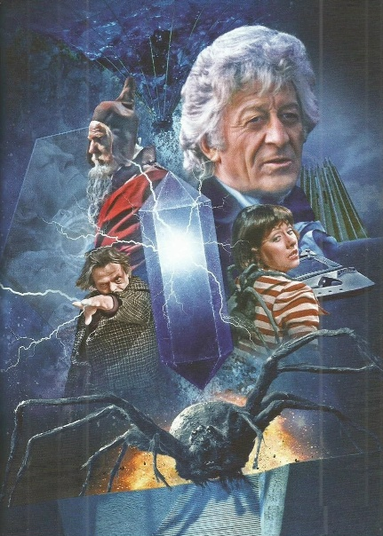

помощник
Субтитры: Русские и Английские |  |
|---|---|
Субтитры: только Английские |  |
| Все эпизоды сохранились в цвете (видеокассета PAL 2") |
|---|
| помощник |
Доктор и Сара Джейн сталкиваются с телепатическим заговором вокруг голубого кристалла с Метебелиса III: он усиливает разум и служит ключом к планам гигантских пауков во главе с королевой Великой. Расследование ведёт из английского монастыря на саму планету пауков, где Доктор вынужден вернуть кристалл — и тем самым остановить угрозу. Последняя серия с Третьим Доктором (Джон Пертви) и первая прямая подготовка к его регенерации.
 VHS - апрель 1991 | DVD - 18 апреля 2011 * Версия в нашей группе |
|---|

